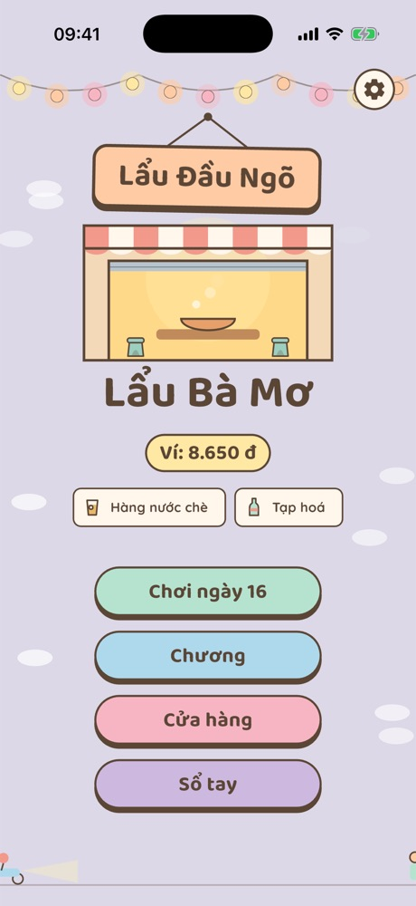
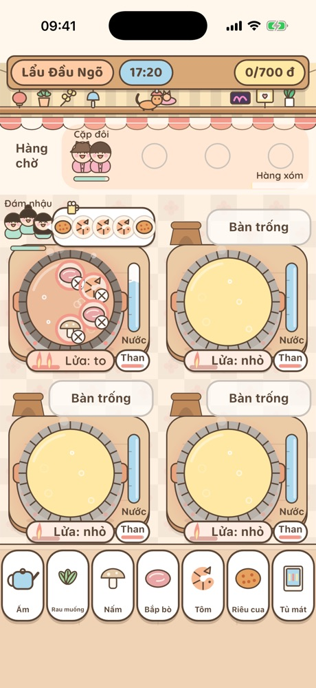
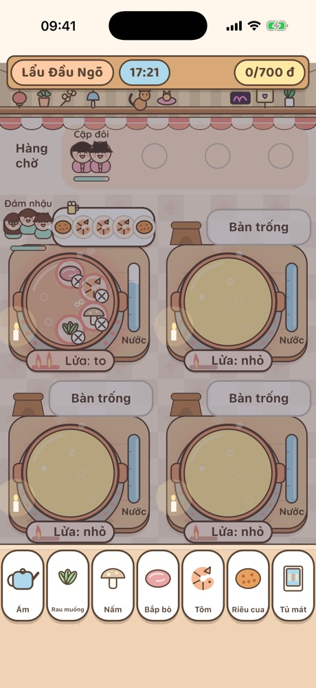
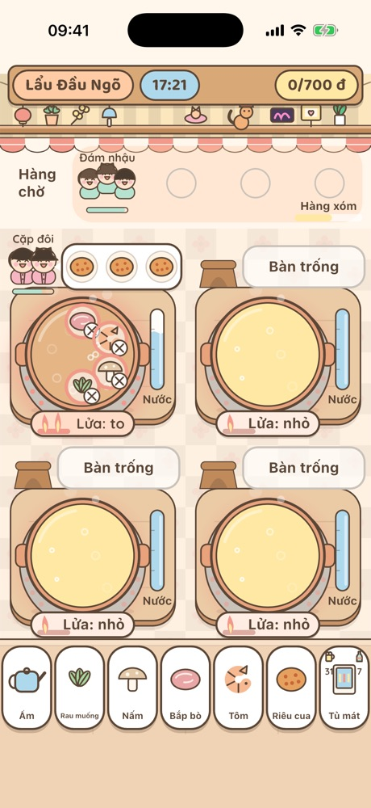
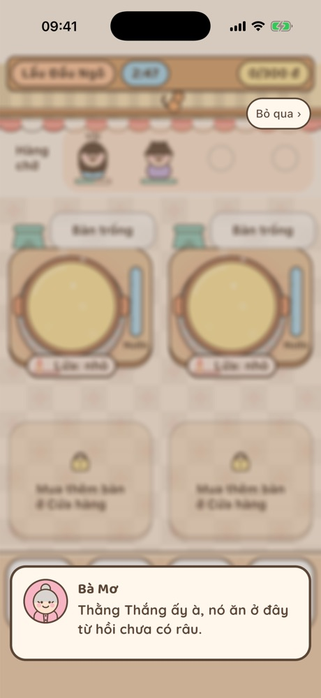
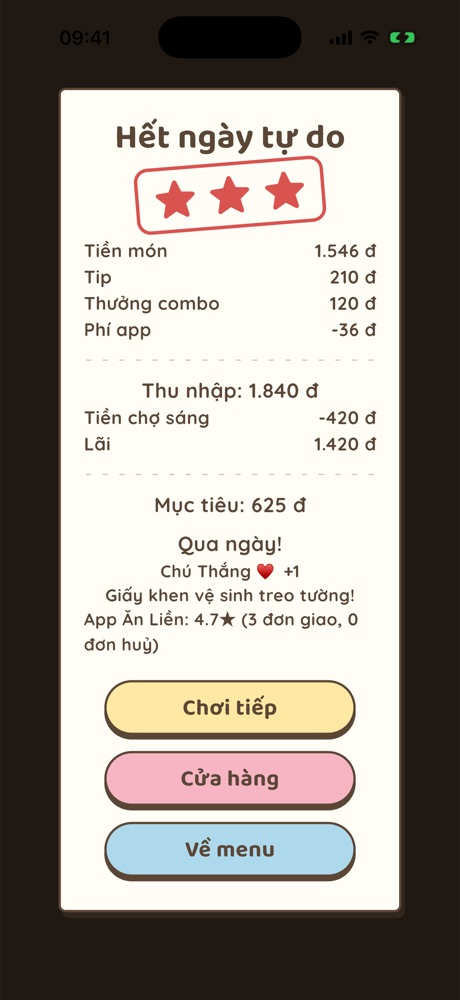
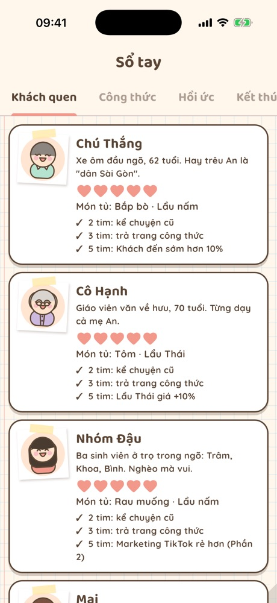
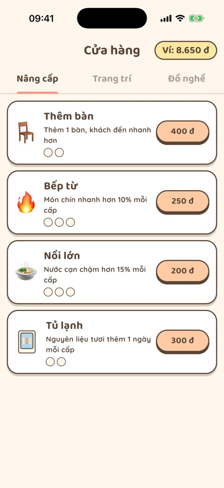

Nhúng lẩu, nướngDip and grill
Kéo món vào nồi, canh lửa, vớt đúng lúc chín tới. Để lâu là nhừ, khách chê.Drag food into the pot, mind the heat, scoop it right on time. Too long and it goes mushy.
Bà Mơ có một quán lẩu nhỏ đầu ngõ. Nồi nước dùng còn sôi, khách đã xếp hàng. Bạn giúp bà từ chiếc nồi đầu tiên đến cả một chuỗi quán trên bản đồ Hà Nội. Grandma Mơ runs a tiny hotpot shop at the mouth of a Hanoi alley. The broth is still bubbling and guests are already lining up. Help her grow from one pot to a chain of shops across Hanoi.
Mỗi ngày một nhịp: đi chợ, mở cửa, cuống tay giờ cao điểm, rồi ngồi đếm hoá đơn.Every day has its rhythm: market run, opening up, the dinner rush, then counting the bills.
Kéo món vào nồi, canh lửa, vớt đúng lúc chín tới. Để lâu là nhừ, khách chê.Drag food into the pot, mind the heat, scoop it right on time. Too long and it goes mushy.
Chọn rau, thịt, bia, nước ngọt. Giá lên xuống theo mùa, sau bão rau đắt, trước Tết thịt tăng.Pick greens, meat, beer and soda. Prices move with the seasons: storms, Tết, summer.
Mở 17:00, đóng 22:00. Dọn bàn, khách gọi thêm, mang bia từ tủ mát, đơn giao qua app.Open at 5 pm, close at 10. Clear tables, take extra orders, fetch drinks, cook delivery orders.
Mất điện thắp nến, đêm bóng đá, ngập ngõ, đoàn kiểm tra vệ sinh, hàng xóm kêu ồn.Blackouts by candlelight, football nights, flooded alleys, health inspectors, grumpy neighbours.
Nâng cấp bếp, thuê người, chạy quảng cáo, mở chi nhánh, giành khách với quán đối diện.Upgrade the kitchen, hire staff, run campaigns, open branches and win guests from rivals.
Mỗi khách một khẩu vị, một câu chuyện. Nhiều nhánh truyện, nhiều kết thúc tuỳ cách bạn làm ăn.Every regular has a taste and a story. Many branches and endings depending on how you run the shop.










Đọc tin sáng, xem thời tiết, mua vừa đủ hàng.Read the morning news, check the weather, buy just enough.
Đầu ca thong thả: xếp khách, đặt nồi, nhóm lửa.A slow start: seat guests, set pots, light the fire.
Bàn kín, khách gọi thêm, đám nhậu đòi bia.Full tables, extra orders, a loud group wants beer.
Tiền món, tip, combo. Đủ mục tiêu là có sao.Food, tips, combos. Hit the goal, earn stars.
“Nồi lẩu cũng như người ấy. Lửa to quá thì cạn, nhỏ quá thì nguội.”“A hotpot is like a person. Too hot and it dries up, too low and it goes cold.”
“Mình mở lại quán năm ngày thôi. Đủ tiền là con về Sài Gòn nha bà.”“Let's reopen for five days. Once we have the money, I go back to Saigon, okay?”
“Dân Sài Gòn ra đây ăn lẩu thì ngồi ghế nhựa nhé, không có sofa đâu.”“Saigon folks eat hotpot on plastic stools here. No sofas.”